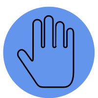
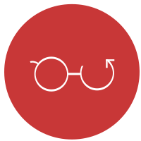

|  |

|
 |
Translaid |
MyOrganizer |
Tetris |
NT Graffiti |
|
a Myo armband powered gesture to text to speech translator |
a facilitator for stand-up meetings powered by a Myo armband |
a rendition of the classic arcade games with cool new features! |
a complementary digital edition of the top student newspaper in the TDSB |
|
Java, Lua and an Arduino |
MEAN.io stack and Lua |
Java applet |
HTML, CSS, JQuery |
Graffiti, the North Toronto CI student newspaper, is one of the most decorated student newspapers in all of Toronto. Coming out with 4 print copies a year sometimes is not enough. Me and a team created a digital edition of the newspaper. This allowed for additional content to complement the print edition of the newspaper.
Some of these advantages of the digital platform are:
- Sharing of articles and content with those not at the school
- Additional media outlets (Podcasts, videos)
- Time sensitive news (school sports scores, winners)
the website was a huge success leading to increased visibility and readership to the infamous student newspaper.

Tetris is one of the most storied computer games of all time. From its humble beginnings in arcades to being the bestselling Nintendo Gameboy game. Anyone and everyone knows what Tetris is.
Serving as my capstone project for my grade 12 computer science class I challenged myself to recreate and expand on this game in cool new ways, and make it look pretty.
Built in Java using jGrasp and utilising the Swing library, allowed me to implement cool new game modes such as invisible and ludicrous speed. All the while maintaining the core mechanics and feel of the classic arcade game.
The Myo armband is a super cool cutting edge piece of technology that potentially has many applications for automating tasks.
Deloitte challenged my team to develop a use for the Myo to improve office productivity. To which we created a facilitator for stand-up meetings. Allowing the team members to actually display what they did rather than just show it and by adding the Myo allows these meetings to not be situated huddled around a laptop, as it is powered by gestures.
Furthermore, we wanted to add some extra productivity to it, and we decide to integrate a calendar / to-do list to fold events and deadlines into these meetings. Outside of the meeting time, the user has access to these calendars and can be shared within a team to have a constantly updating calendar and to-do list.
At its core, the Myo allows the user to trigger events with gestures. When coming up with a potential project for EngHack 2015, my team thought of creating a sign language tool using the Myo. However the Myo cannot detect the small muscle movements caused by the position of a finger. Therefore we decided to come up with a way to use the Myo as a communication tool.
The end result was a gesture to text to speech communicator that is linked to the 15 most common phrases to assist anyone who can't speak the language, or can't speak total.
Our program through Bluetooth sent the information to a computer which has audio and visual feedback to communicate the phrase. In addition, we integrated an Arduino Uno to show the endless possibilities of this device.